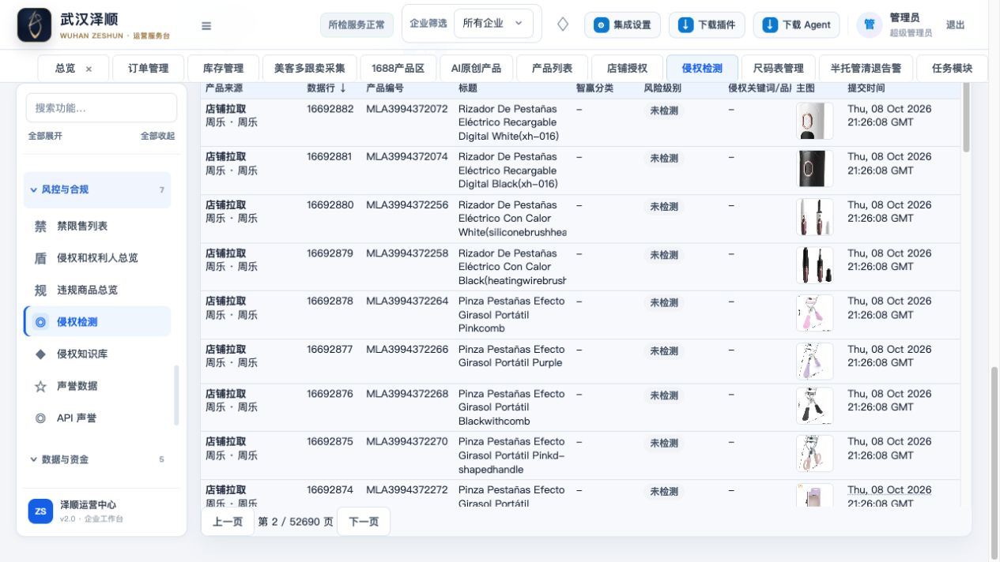

数据库索引与分页优化验证
2026-10-08 · 本机 http://127.0.0.1:5000 · 已登录真实数据
已完成本轮索引、分页和首屏阻塞修复。下列重点场景本次样本在 3 秒内；尚不能认定全部页面、全部筛选、所有并发负载均达到 3 秒。
页面展示实测
以点击前计时，到主要列表 DOM 更新并经过两次绘制帧为止。包含少量自动化调用开销。每项为本轮单次样本，非 P95 或冷数据库测试；侵权首屏命中预加载，已单独标明。
| 场景 | 主要数据展示 | 结论 |
|---|
| 侵权列表首次打开（命中预加载） | 0.215 秒 | 本次样本通过 |
| 侵权列表第 2 页 | 1.731 秒 | 本次样本通过 |
| 订单首次展示 | 2.815 秒 | 本次样本通过 |
| 订单第 2 页 | 1.776 秒 | 本次样本通过 |
| 商品搜索：无结果 | 1.306 秒 | 本次样本通过 |
| 商品搜索：Vestido，100 件 | 1.714 秒 | 本次样本通过 |
本轮改动
- 商品搜索：创建两个完整覆盖索引，覆盖标题、商品编号、企业及私有权限字段；先从覆盖索引筛出 ID，分页后再读取完整商品。保留包含匹配与企业、私有商品权限。
- 订单：默认每页 50 条；合并重复运费关联查询，普通列表跳过全量财务计算。财务汇总独立加载，切换筛选后旧响应不能覆盖新结果。后台统计中明确显示“统计中”。
- 侵权列表：默认按 ID 排序，每页 50 条。先在各来源分页取 ID，再读取本页快照，避免首屏加载 263 万条完整数据。页面注明风险计数为“本页”，总记录数仍为全量。
- 任务、尺码表、侵权纯读取请求与长后台任务分离；预加载同步使用有界分页。
- 尺码表：打开选项直接读取已保存授权站点，预检与上传继续实时校验身份和站点权限。没有本地站点时提示更新授权。
数据与正确性验证
- 商品真实数据库查询：无权限条件约 0.71–0.78 秒；带超级管理员及员工企业/私有权限约 1.05–1.42 秒。
- 订单原查询与快速查询，默认、国家筛选、第二页、无匹配搜索、成本排序五组：行数据、总数、页数和筛选选项一致。
- 侵权真实数据库：263 万候选记录，第一页 0.684 秒、第二页 0.429 秒。分页测试覆盖多来源重复 ID、正反序、无遗漏和按页加载。
- 尺码表选项接口从本轮发现的 63.84 秒降至 0.252 秒；模板 0.205 秒、上传记录 0.247 秒。接口耗时不替代点击到显示耗时。
- 任务选项接口 0.167 秒，清退列表 0.081–0.131 秒，页面已正常显示。
- 核心 Python 回归 178 项通过；尺码表专项 65 项通过（与核心套件有重叠）；JavaScript 21 项通过。未将项目先前全量测试中的历史失败宣称为已修复。
仍待解决
- 订单全量汇总仍约 4.20–5.06 秒，现已不阻塞列表；若将统计卡片也纳入 3 秒验收，该部分仍不达标。
- 侵权高级搜索、风险/分类筛选及其他排序仍走完整计算路径；深分页也未完成 3 秒验收。需设计可增量维护的风险查询表，保留内容变化后的待重检语义。
- 售后全店铺历史消息读取、Yandex 冷请求、订单翻译等外部调用未在本轮解决。需要本地持久化快照和增量同步，不能靠数据库索引保证外部响应时间。
- 商品辅助分类/发布状态本轮仍出现约 4.8–7.5 秒响应，未阻塞主要列表，但尚未完成优化。
- 未重跑所有 38 个模块及其全部交互；不能据此宣布项目全场景验收通过。
上线与复现
本机已创建两个索引并加载代码。其他数据库需运行 python3 scripts/optimize_product_search_index.py --apply；脚本检查等价索引，使用在线 DDL，遇到锁等待失败不自动回退复制整表。新增索引有存储和写入维护开销，未做写吞吐压测。
分页界面

原始证据
之前的全面功能测试报告